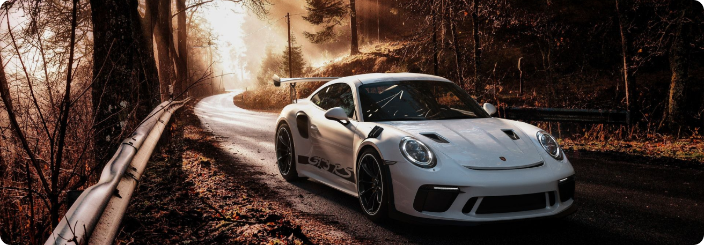

L'EXPÉRIENCE EXTRAORDINAIRE
El nostre periodista Jean-Pierre Gagick prova el darrer model de Porsche: la 911 S/T. I per trobar l’origen del nom "S/T", cal remuntar-se a la creació original de 1969. En aquella època, el fabricant volia crear una versió lleugera de la 911 S per a la competició. Davant d’aquest èxit inesperat, Porsche pren la decisió de crear el seu model homologat per a la carretera.
